Module 12 — Governance
Six lessons in the original course order. English study explanations are paraphrased and interactive descriptions are expanded. Retained illustrations keep their original English text. No campaign, certification decision or policy was created or changed during capture.
12.1 Overview
Lina introduces governance as keeping access aligned with business policy, reducing risk and supporting compliance. Certification campaigns review existing access; policies identify unwanted combinations and data conditions. The module develops the administration and reviewer sides of these controls.
Missing artwork: the common photograph and this lesson's Lina banner were not saved.
Overview footer12.2 What is governance?
Three definitions: accordions expanded
Governance manages who can access organizational applications, systems and data. Certifications and policies complement each other within that process.
A certification is one review assigned to a reviewer, such as a manager or system owner, who assesses whether the access remains appropriate.
 Certification
CertificationA campaign groups certifications across the chosen identities, rights or applications.
 Campaign
CampaignA campaign filter defines the inclusion or exclusion rules that determine the review scope in a filter-based campaign.
 Campaign filter
Campaign filterWhy review access?
Reviews provide visibility into who holds which rights, support evidence for audits and help identify access that is no longer justified. Clear information and appropriate reviewers are prerequisites for meaningful decisions.
Certification visibility Governance illustration
Governance illustration Governance illustration
Governance illustrationPolicies
Separation of Duties policies identify conflicting or excessive combinations in business processes. General policies identify unwanted data or access conditions, including integrity problems. Detection needs an owner who can assess and address the result; not every violation can be resolved by the ISC administrator alone.
 Knowledge check
Knowledge check Lesson footer
Lesson footerAll three definition accordions and continuation sections were read.
12.3 Certification campaigns
Prepare first
Validate source and identity data, ensure managers are populated, and give access items understandable business descriptions. Reviewers should be able to decide without having to decipher technical names or repair basic ownership data.
Campaign phases: all four tabs
Generation collects the configured data and creates individual reviews. Duration depends on volume and complexity.
Preview lets administrators inspect reviewers and pending work before launch, make assignments, start the campaign or cancel it.
Active notifies reviewers, makes their work available through Certifications and supports reassignment. Reviewers decide on the items and sign off. Several campaigns can be active concurrently.
End brings the campaign to its completion process, handles revocation work and exposes results and reports. Completed reviews no longer accept new decisions. The lesson separately discusses due-date handling and administrators finishing a campaign; the available options depend on its original configuration.
 Narrator transition
Narrator transition Section divider
Section dividerSearch-based campaigns: five object markers
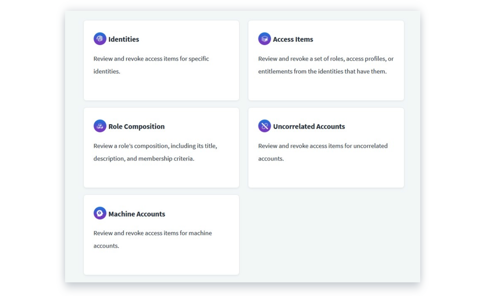
Campaign certification objectsIdentities scopes reviews to selected people's access. Access Items scopes a set of roles, access profiles or entitlements and their holders. Roles reviews composition, including title, description, membership and included access. Uncorrelated Accounts reviews source accounts without an authoritative identity link. Machine Accounts reviews access for application identities grouping service accounts, bots or other non-human accounts.
The illustrated route is Search > Certification Campaigns > New Campaign, then the relevant object tile.
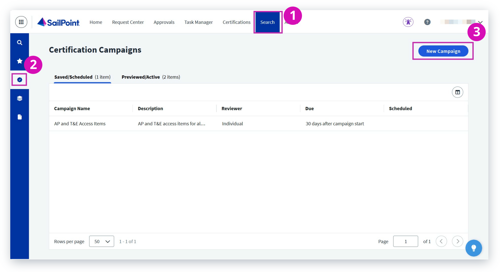
Create a search-based campaignRole Composition campaigns evaluate the model itself, rather than only an identity's access. Requested composition changes are handled through administrative work.
 Section divider
Section dividerFilter-based campaigns: three markers
Manager and Source Owner campaigns can use predefined filters. Open Admin > Certifications > Campaign Filters > + New in the course example.
 Campaign filter
Campaign filterAn inclusion filter on Department = Engineering includes that population. The lesson mentions seven filter-criteria types, including identities, roles and entitlements. Its multi-criteria marker states that combined criteria use OR: a match on an individual criterion can include or exclude the corresponding item. Check the preview to confirm the intended scope.
 Filter criteria
Filter criteria Section divider
Section dividerFour notification templates
The templates are available through Admin > Global > Email Templates. Pre-Generation Notification goes to the scheduled campaign creator one week before generation. Certification notifies assigned reviewers. Certification Due is described as recurring weekly after the start until sign-off or campaign end. Certification Reassignment informs a new reviewer of their assigned work. These intervals are course-version descriptions.
Reassignment: all three panels
Reassignment removes the old assignment and creates a review for the new reviewer, who receives an email.
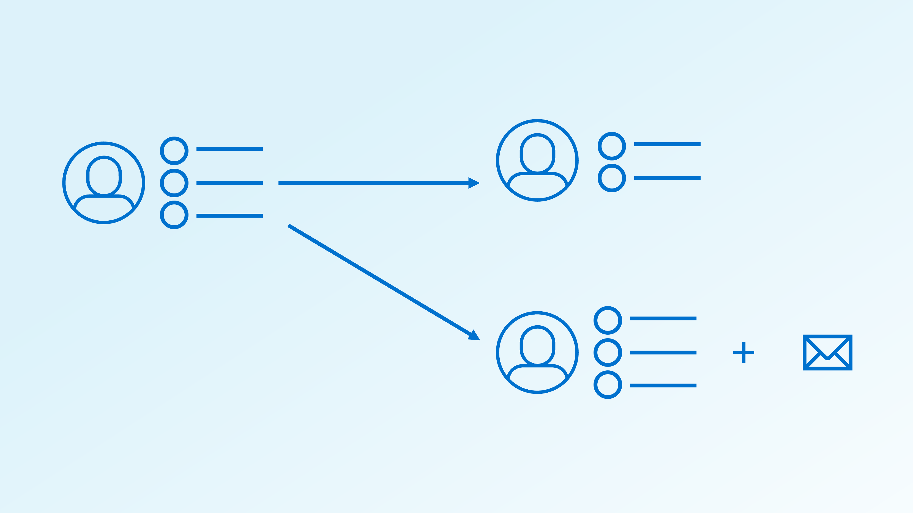
Certification reassignmentA reviewer cannot certify their own access, and a signed-off certification cannot be reassigned. Unsigned work can move more than once, including back to its original reviewer.
Reassignment constraintsWork reassignment can also be automated.
Automated work reassignmentThe Work Reassignment feature supports temporary or permanent redirection of certification and approval work, for example during leave.
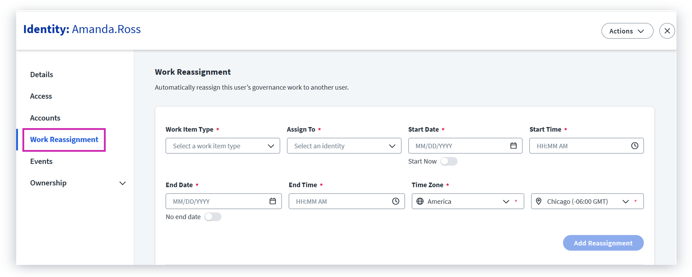
Work ReassignmentMonitor and complete the campaign
The administrative dashboard presents progress, completion rates and decision trends. The campaign administrator oversees reviewers and can open campaign-specific summaries.
 Campaign progress
Campaign progressReports provide detail during the campaign and help track access that needs removal.
 Campaign reporting
Campaign reportingThe four completion accordions cover reminders, outstanding decisions, revocation verification and deletion. ISC can send recurring reminder emails, and administrators can send manual reminders. For unresolved items after the deadline, behavior can include retaining access, using configured approve/revoke handling or waiting for review, depending on campaign settings. After completion, verify that rejected access was actually removed; some fulfillment may require manual action.
Deleting a campaign removes its records and reports and makes it disappear from participants' views; the lesson says participants are not notified of deletion. This is described as source content, not an action taken during capture.
 Knowledge check
Knowledge checkAll phase tabs, five object markers, three filter markers, four email accordions, three reassignment panels and four completion accordions were inspected.
12.4 Reviewing certifications
Enter and inspect the review
Reviewers can open Certifications from the navigation menu or use a notification email link.
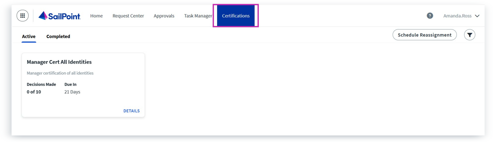
Certifications navigation Certification notification
Certification notificationDetails provides context about the campaign before the reviewer continues into its work.
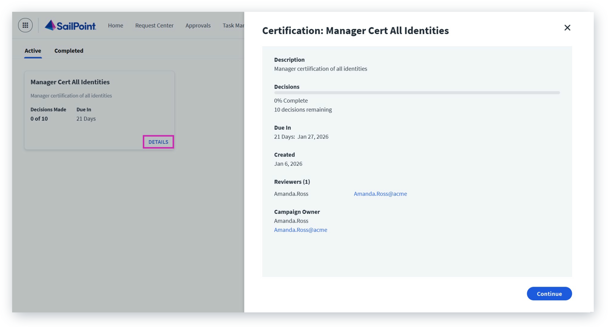
Campaign detailsReviewer interface: eight markers
 Reviewer interface
Reviewer interfaceView By switches between identities and access items. The list follows that selection, and the available tabs depend on the certification type. Flags call attention to information relevant to a decision. Recommended and Not Recommended icons explain the model's suggestion. Approve/Revoke records a decision for the item. More Options supports comments, reassignment or a revocation date.
Recommendations draw on peer analysis, organizational identity attributes, shared AI-core attributes and threshold calculations. A recommendation is supporting evidence for the reviewer rather than an automatic replacement for their judgment.
Sign off
After deciding on the items, the reviewer signs off. The lesson describes this as locking decisions and triggering follow-up actions such as revocation. Complete the work before the deadline; unfinished items are handled under campaign settings when the administrator completes the campaign.
 Certification sign-off
Certification sign-offAll eight interface markers were read. No certification was approved, revoked or signed off during capture.
12.5 Policy overview
Establish the rule and response
Understand organizational security requirements, obtain the relevant internal policy documentation and learn the searchable data model and query syntax. A policy's detection should lead to assessment and a responsible owner; the security team may need to handle issues outside an ISC administrator's remit.
 Policy types
Policy typesSeparation of Duties
SoD detects a toxic combination of access that could allow one person to bypass a business control.
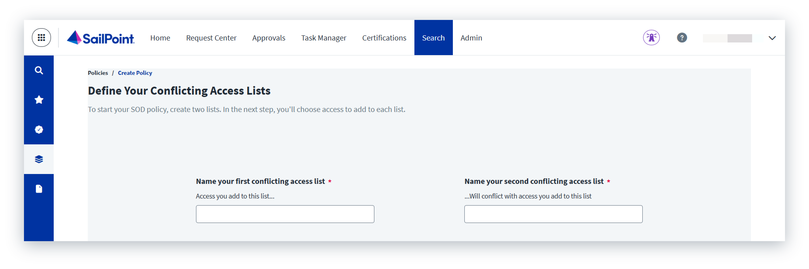
Separation of DutiesThe example combines Accounts Payable with Vendor Contract Creation, allowing a person to create a vendor and pay it. Comparing two conflicting access sets identifies identities holding both.
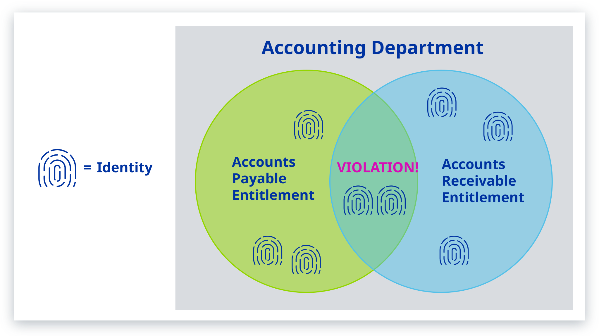
Conflicting access examplePreventative SoD
During a request, the approver can be warned that the proposed access would create a violation. The lesson explicitly says that this warning does not necessarily block the request: an authorized exception may be approved and recorded for audit.
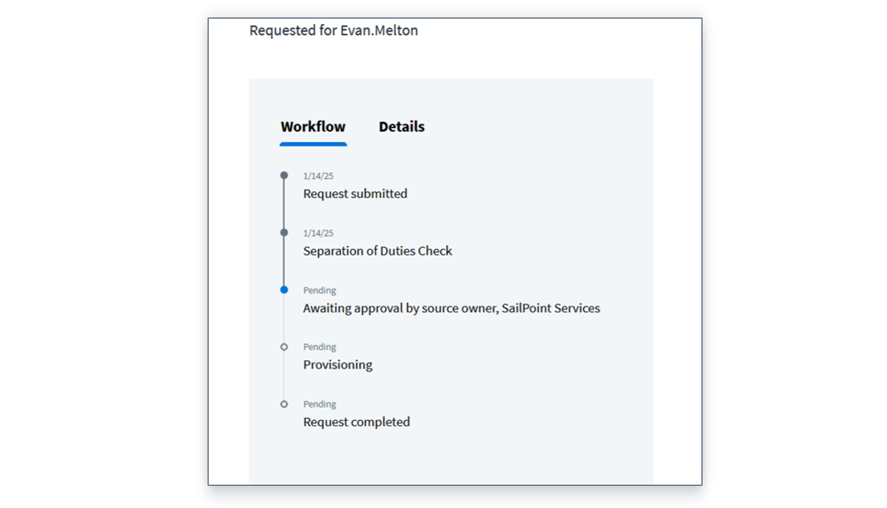
Preventative SoD warningSource wording caveat: an earlier paragraph says conflicting access is stopped, while the later preventative section explains warning-and-exception behavior. These notes follow the more specific explanation and do not promise an unconditional technical block.
General policies
General policies use search queries to identify unwanted conditions. Examples include identities without managers or people in one department holding access meant for another. Saved criteria can run on a schedule, flag issues and, in supported scenarios, lead to certification work.
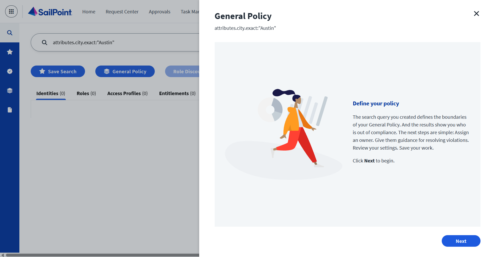
General policyCreate a policy: two panels
The first panel opens Search, selects Policies and chooses Create New Policy.
 Create policy step 1
Create policy step 1The second selects the policy type. The lesson does not provide a complete configuration walkthrough for every possible rule.
 Choose policy type
Choose policy typeViolations and subscriptions
A scan evaluates identities against the defined rule. Review the affected identities and details in ISC or in the violation report, then prioritize remediation.
 Policy violation animation
Policy violation animation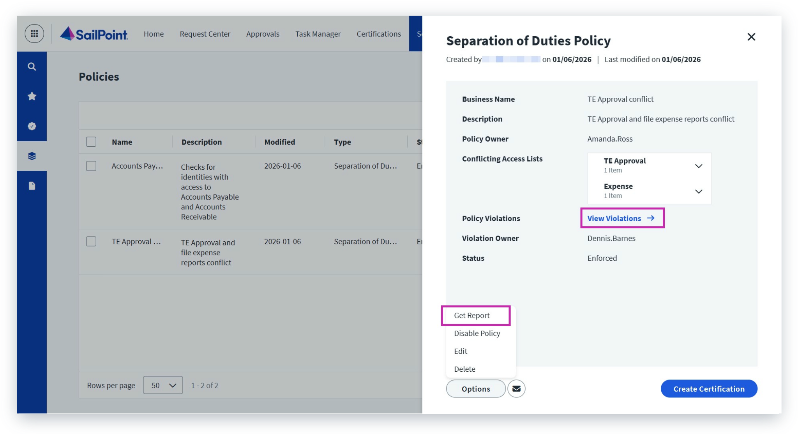
Policy violationsRun a policy manually or configure a subscription defining frequency and recipients. The lesson states that violation owners receive notifications and other stakeholders, such as compliance officers, can also subscribe.
 Policy subscriptions
Policy subscriptions Knowledge check
Knowledge checkAll two creation-panel explanations were read. No policy, notification subscription or violation remediation was executed.
12.6 Recap
Governance combines review of existing access with detection of risky conditions. Certification campaigns organize accountable decisions; policies surface conflicts and data problems. Completion includes checking the target-state result, not only recording a review decision.
Lesson footerModule coverage and missing materials
All six lesson bodies and continuation sections were inspected. Forty unique inline image URLs were saved, including original SVG interface examples and the policy-violation GIF. Expanded content includes three definitions, four phase tabs, five campaign-object markers, three filter markers, four notification accordions, three reassignment panels, four completion accordions, eight review-interface markers and two policy-creation panels.
Seven background-only files were not saved: the common photograph, five Lina lesson-banner variants and the recap banner. Exact paths appear in coverage.json. Separate audiovisual narration, external full product documentation and executable interactions are not included. Conflicting source wording about SoD blocking is flagged above. No knowledge check or live governance action was submitted.